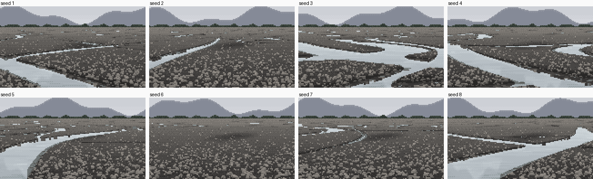
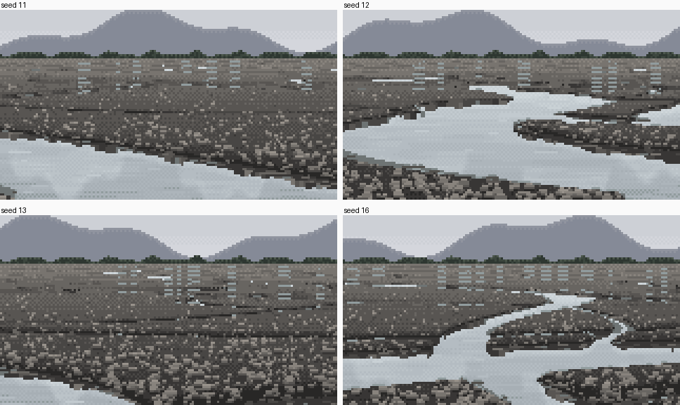
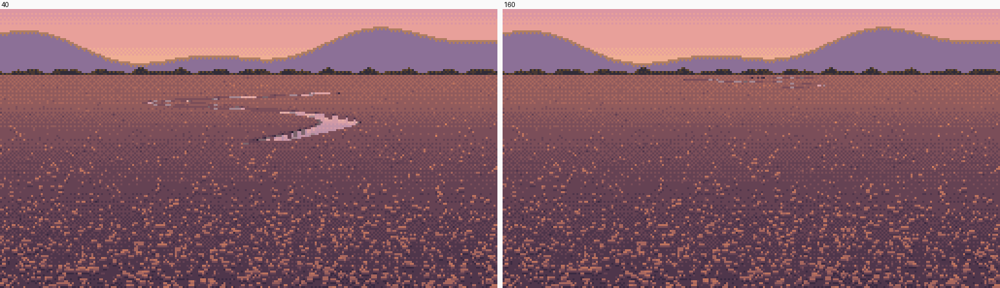
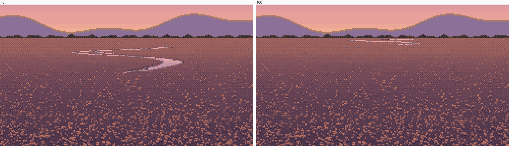

6. Distance: the channel at every size, down to a one-row thread
What it's for. A braided river seen at a low angle is mostly far water: ribbons that shrink to a few rows and then to one-pixel threads near the horizon, which is what makes a braid read as a braid. V02 draws those threads as one-row runs of sky, and the critic listed "far threads as one-row runs, with LOD by row footprint" as ready to use. The renderer has to be told to draw them, because a ray won't find them.
Code: the sub-pixel thread block and the run filter at the end of raycast in code/world.py; the LOD block in BraidPlain.__init__; render_designed in code/s5_braid.py.

The same designed channel from a 4 m eye, starting at 8, 40 and 160 m (dusk). At 160 m it's a bright run a row or two tall. figs.py fig_ladder.
Step 1. See why the rays miss
At a low angle, one screen row far off spans tens of metres of ground: at 300 m from a 1.7 m eye with f = 320, a row covers about 165 m. A 3 m channel covers a few percent of that pixel's footprint, so the single ray through the pixel's centre almost never lands in it. My first braid plains had no far water at all, or water in short vertical slivers wherever a thread ran toward the viewer:

nb133. Eight seeds. Near channels read, but the far third is dry gravel with a few vertical slivers. Ferrari's far threads are the opposite: horizontal.
Step 2. Mark a pixel as water when water covers enough of its footprint
For each row, find the ground interval the pixel spans, [znear, zfar], and count what fraction of the column's samples in that interval are under water. Mark the pixel as water where the fraction passes a threshold, and only at a local maximum down the column, so a thread stays one row tall:
# sub-pixel threads (V02): far away a row spans tens of metres of ground, so a channel a few
# metres wide is missed by a single ray. Ferrari draws it anyway, one row tall. Mark a
# ground pixel as water when water covers enough of its footprint.
if thread_frac > 0:
s_lo = (rows - 0.5 - cam.hz) / cam.f; s_hi = (rows + 0.5 - cam.hz) / cam.f
zfar = np.where(s_lo > 0, cam.h / np.maximum(s_lo, 1e-6), 1e9); znear = cam.h / np.maximum(s_hi, 1e-6)
iw = np.searchsorted(zs, znear); iw2 = np.searchsorted(zs, zfar)
wetc = np.r_[0, np.cumsum(yt < -0.005)]
frac = (wetc[np.minimum(iw2, len(zs))] - wetc[np.minimum(iw, len(zs))]) / np.maximum(iw2 - iw, 1)
fl = np.r_[frac[1:], 0]; fu = np.r_[0, frac[:-1]]
th = hitany & ~wet & (frac > thread_frac) & (zh > thread_z) & (frac >= fl) & (frac > fu)
thread_frac is 0.05 and thread_z is 25 m (nearer than that, the rays do the job).
Step 3. A thread is a run, never a ladder
Column-by-column marks come out as ladders: vertical stacks of one-pixel marks where a thread slants.

nb136. Coverage marks without the run rule: little vertical ladders of light pixels in the far band.
V02's rule is that a far thread is a horizontal run of 5–15 px. So after the whole frame is cast, keep only the marks that make runs of at least 3 px in their row, then bridge some short gaps (≤ 4 px, 60% of the time) so a thread never reads as evenly dotted:
# a thread is a horizontal run (V02): drop marks that don't make a run of >= 3 px in their row
...
if e - x >= 3:
keep[r, x:e] |= T[r, x:e]
...
# vary the run pattern: bridge some short gaps so a thread never reads as evenly dotted
for r in range(H):
xs_ = np.nonzero(keep[r])[0]
for a_, b_ in zip(xs_[:-1], xs_[1:]):
if 1 < b_ - a_ <= 4 and rng_t.random() < 0.6:
keep[r, a_:b_] = True
The gap bridging came after the critic's round 11: "the far water line is a row of short white dashes with even gaps".
The run rule removed isolated marks, but it didn't remove the ladders. Each rung of a ladder was a run of its own, one per row, stacked where a far thread meandered. Their cause was upstream, in the geometry (step 5).
Step 4. Far threads always mirror the sky
Physically, the reflected ray from a far channel at 1° grazing hits the next bar a few metres on, so a far thread ought to be dark. Rendered honestly, my 160 m thread was a grey run that disappeared into the plain:

nb147. Physically correct: the far threads reflect the next bar and go grey.
Ferrari paints them as the sky ramp, and the photos agree: they're taken from terraces, and every far thread is bright. So I force it:
if thr_c[r]: # Ferrari's far threads are always the sky ramp
G['graze'][r, c] = np.arctan(s[r]); G['refl'][r, c] = 0
continue

nb148. Forced to the sky: the thread at 160 m is a bright one-row run.
This is one of the places where the medium overrules the physics, and it should.
Step 5. Average the meanders a row can't resolve
A thread that meanders on a 20 m wavelength, seen where one row spans 100 m, aliases into vertical zigzags. So each thread's centreline is averaged, in plan, over a window that grows with distance, and its width grows by the spread it swings through, making it a straight "belt" as wide as the meander:
# level of detail: far away one screen row spans tens of metres, so meanders shorter than
# that are averaged into a straight 'belt' as wide as they swing (no aliasing ladders)
cs = np.r_[0, np.cumsum(x)]; cs2 = np.r_[0, np.cumsum(x * x)]
kk = np.clip((lod * zs).astype(int), 0, 200)
...
mu = (cs[i1] - cs[i0]) / n_; var = np.maximum((cs2[i1] - cs2[i0]) / n_ - mu ** 2, 0)
x = mu; w = w + 0.9 * np.sqrt(var) * (kk > 0)
nb137. With the run rule and no meander LOD: the ladders are still there.

nb138. With the meander LOD: the far band becomes horizontal belts and threads. It's also already too full of water (step 7).
The window must scale with the camera, because a row's footprint goes as z²/(f·h). My first 30° oblique used the low-angle lod and every curve became a straight belt ("cut paper", how-to 8). s5_braid.render now sets lod = 0.06 · (1.7·320) / (h·f).
Step 6. Give the eye a little height
From 1.7 m, bars 0.25 m high hide every channel beyond about 100 m. That's true, and dull. The photos with far threads were taken from terraces, and V02's vantage is well above its marsh. The distance ladder at the top uses a 4 m eye.
Step 7. What a busy plain still does wrong (found while writing this page)

The far band of a 16-thread braid plain at midday, 4×: no sub-pixel threads, no meander LOD, and both on as delivered. figs.py fig_threads.
With both on, the far band is striped: light run, dark line, light run, every other row. Rendering this figure, I measured why, and there are two reasons:
- Too much far water. The rows between 52 and 62 are 25–97% water (
G['kind'] == 2). V02's far marsh is a few threads with plain marsh between. The plain generator should thin its threads with distance, as his does. I didn't. - Every thread gets a dark contact row above it. 95% of thread pixels sit directly under the darkest gravel step, because the painter applies the far-edge contact line (how-to 4) to every water pixel. In V02, the far threads (above his row 300) have no edge marks at all: his marsh's lightest colour sits right against them. Copy A got this right, because its edge rules only apply from row 300 down. My painter forgot it. The fix would be to skip the contact row where
G['thread']is set.
The designed single channel (the ladder above) has few threads, so it doesn't show either problem. That's the version to learn from.